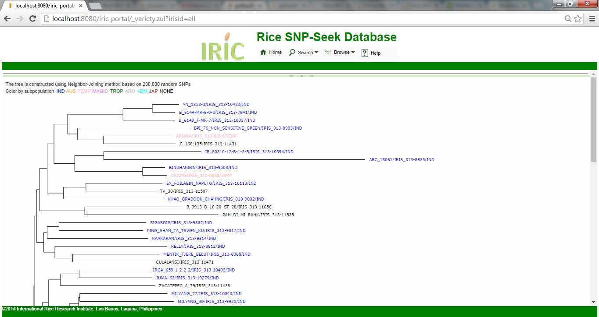

The Tree Browser displays the phylogenetic tree of all varieties, computed based on 200,000 random SNPs. Each node representing a variety, is color-coded based on its subpopulation. Clicking the nodes displays the Variety details.